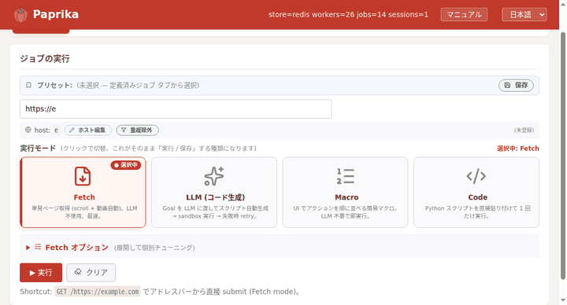

Paprika
分散ワーカー上の Chrome を Playwright スタイルの Python・PHP で操作、 AI を使って、ページの画像・動画・リンクをまとめて収集するブラウザ自動化プラットフォーム。
はじめる → ガイドを見る
Wikipedia の記事を投入 → 管理画面のライブパネル「ギャラリー」に画像が次々と並んでいく実際の動作（ハブ・ワーカー上で稼働中）。
Paprika とは
URL を渡すと、フリート上の実ブラウザがページを開き、画像・動画・HTML を収集して返します。 ログインが必要・JavaScript で描画される・年齢確認がある、といった「機械的な巡回が難しいサイト」でも安定して動くことを目指した基盤です。 同様のものに Stagehand、Browser-Use、Browserable があります。
使い方は 3 通り。管理 UI から URL を POST / HTTP API を実行 / paprika-client（Python / PHP SDK）を使います。
できること
画像・動画の一括取得
1 つの URL からページ上の画像・動画を丸ごとダウンロードします。遅延ロードや動画ストリームにも対応しています。
Playwright スタイル SDK
page.goto() / click() / fill() に加え、evaluate()・待機・Locator まで。
ログイン必須サイト
一度ログインして Cookie を保存すれば、以後の収集で自動的に再利用されます。
LLM / Vision エージェント
自然言語のゴールを渡すとスクリプトを生成・実行します。CSS が効かない画面は画面を見て操作します。
ライブ noVNC
実行中のブラウザをブラウザ上で観察・手動操作できます。人手への引き継ぎも可能です。
分散フリート
多数のワーカーが並列実行。1 台で複数の独立ブラウザ（Lane）を保持。
最短の例
1 つの記事ページの画像を全部ダウンロードする：
import asyncio
from paprika_client import async_paprika
async def main():
async with async_paprika.connect() as cli:
job = await cli.fetch("https://example.com/article") # 開いて収集
await cli.download_job_assets(job.job_id, "out/") # 画像を保存
asyncio.run(main())ブラウザを対話的に動かしたいときは cli.session()：
async with cli.session("https://example.com") as page:
await page.click("text=ログイン")
await page.fill("#user", "alice")
await page.screenshot(path="shot.png")次のステップ
はじめに →
インストール・接続・最初のスクリプト・コア概念。
ガイド →
画像/動画の取得、ログイン、ブラウザ操作、LLM の使い分け。
API リファレンス →
SDK の全関数：引数・戻り値・例。
サーバー →
3つの構成パターン・Docker / CLI 起動・環境変数・デプロイ。
背景 — paps / ProtectionAI
特定非営利活動法人ぱっぷす（paps.jp）は、性的搾取・デジタル性暴力被害の相談窓口です。 意に反して拡散された画像・動画の探索と、サイト・プラットフォーム運営者への削除要請までを補助するシステム ProtectionAI を開発しています（対面・電話・メール・SNS で被害相談を受付）。
その探索基盤として、複雑なサイトでも安定してページを開き画像・動画・リンクを収集できる汎用クローラーが必要になり、Paprika が生まれました。 本リポジトリには被害者画像の検出ロジックは含まれず（それは ProtectionAI 側）、ここで公開しているのは汎用的な Web 自動化基盤です。
利用について
想定用途：証拠保全 — 意に反して拡散された画像・動画の 《削除要請に使う記録》 — スクリーンショット・HTML・収集物・取得時刻 — をタイムスタンプ付きで保存する用途を前提に運用されています。 想定する利用者は デジタル性暴力被害支援団体・報道・弁護士 など、 被害支援・著作権侵害対応・コンプライアンスなど 正当な目的での利用を前提 としています。
禁止する用途 — 取得した画像・動画・テキストには 第三者の著作物 が含まれ得ます。 証拠保全・私的利用・引用の範囲を超えた再配布・公開・商用利用 は著作権侵害となるため 使用してはいけません。 対象サイトの利用規約（ToS）と各国法令（日本では著作権法・不正アクセス禁止法など）の遵守が求められています。 判断に迷う場合は実行しないでください。